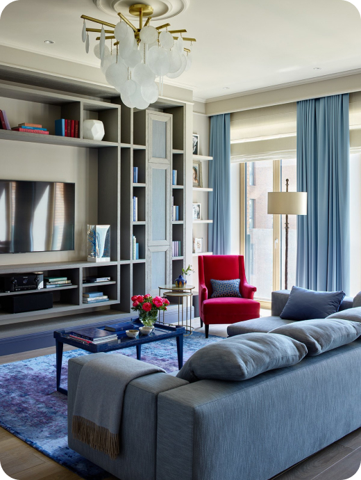

35000 р.
29 кв. м
м. Василеостровская
Описание
Стильная квартира возле метро Василеостровская. Развитая инфраструктура , множество магазинов , кафе.
Полноценная кухня, диван раскладывается. Комфортный диван для просмотра телевизора и сна.
Посудомоечная машина, плита, холодильник, смарт тв